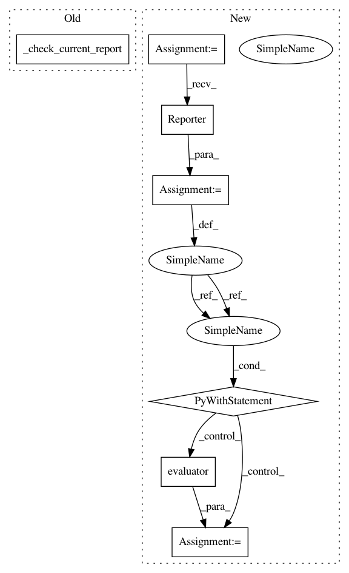

78af1378c55637a88c63019b3b8dbdd5379c5a20,tests/extensions_tests/evaluator_tests/test_semantic_segmentation_evaluator.py,TestSemanticSegmentationEvaluator,test_current_report,#TestSemanticSegmentationEvaluator#,175
Before Change
np.testing.assert_equal(reporter.observation, eval_)
def test_current_report(self):
self._check_current_report()
@attr.mpi
def test_current_report_with_comm(self):
comm = create_communicator("naive")
After Change
np.testing.assert_equal(eval_["eval/main/class_accuracy/c"], np.nan)
def test_current_report(self):
reporter = chainer.Reporter()
with reporter:
eval_ = self.evaluator()
// The result is reported to the current reporter.
np.testing.assert_equal(reporter.observation, eval_)
class TestSemanticSegmentationEvaluatorMPI(unittest.TestCase):
In pattern: SUPERPATTERN
Frequency: 4
Non-data size: 7
Instances
Project Name: chainer/chainercv
Commit Name: 78af1378c55637a88c63019b3b8dbdd5379c5a20
Time: 2019-05-28
Author: yuyuniitani@gmail.com
File Name: tests/extensions_tests/evaluator_tests/test_semantic_segmentation_evaluator.py
Class Name: TestSemanticSegmentationEvaluator
Method Name: test_current_report
Project Name: chainer/chainercv
Commit Name: 78af1378c55637a88c63019b3b8dbdd5379c5a20
Time: 2019-05-28
Author: yuyuniitani@gmail.com
File Name: tests/extensions_tests/evaluator_tests/test_instance_segmentation_voc_evaluator.py
Class Name: TestInstanceSegmentationVOCEvaluator
Method Name: test_current_report
Project Name: chainer/chainercv
Commit Name: 78af1378c55637a88c63019b3b8dbdd5379c5a20
Time: 2019-05-28
Author: yuyuniitani@gmail.com
File Name: tests/extensions_tests/evaluator_tests/test_instance_segmentation_coco_evaluator.py
Class Name: TestInstanceSegmentationCOCOEvaluator
Method Name: test_current_report
Project Name: chainer/chainercv
Commit Name: 78af1378c55637a88c63019b3b8dbdd5379c5a20
Time: 2019-05-28
Author: yuyuniitani@gmail.com
File Name: tests/extensions_tests/evaluator_tests/test_detection_voc_evaluator.py
Class Name: TestDetectionVOCEvaluator
Method Name: test_current_report